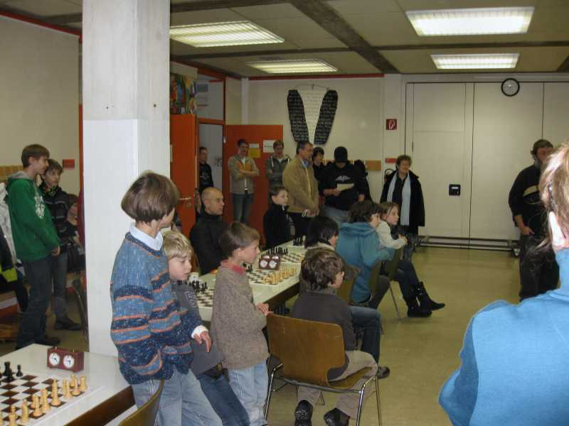
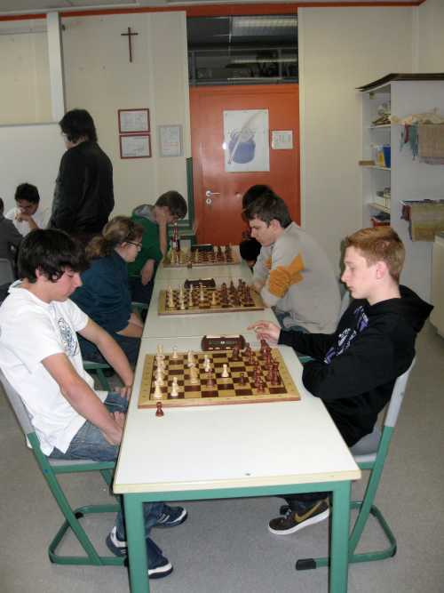
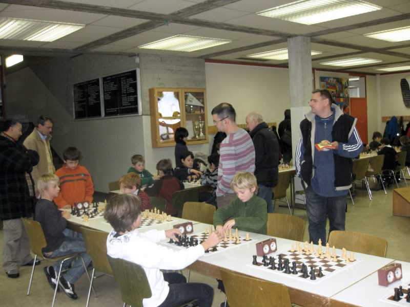
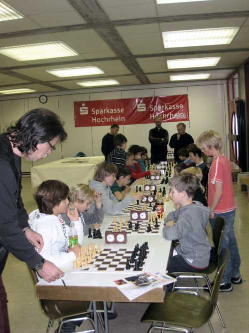

Begrüßung in der Hans-Thoma-Schule durch die Turnierleiter Wolfgang Scheina und Roland Bahner

Alle warten auf den Beginn der Spiele

Die Altersgruppen U18, U16 und U14 spielten gemeinsam...

... in einem eigenen Raum

Für die U12 waren genügend Teilnehmer vorhanden,

während die U8 und U10 ebenfalls gemeinsam in einer Gruppe spielten

Die Betreuung und Ergebnisaufnahme war nicht immer einfach

Die Kaffeestube war gut besucht

und wurde souverän betreut

Die Sieger der Altersgruppen.
Hinten von links nach rechts Jonas Engesser U14 (SC Steißlingen), Jochen Bahner U18 (SC Laufenburg),
Sarah Hund U12 (SK FR-Zähringen) und Mario Rösch U16 (SK FR-Zähringen)
Vorne Mata Bence U8 (SC Steißlingen) und Saphir Sahki (SC Brombach)

Nach getaner Arbeit versammelten sich die meisten Helfer noch zu einem Gruppenbild
Am Montag, 6.12., berichtete der Südkurier: